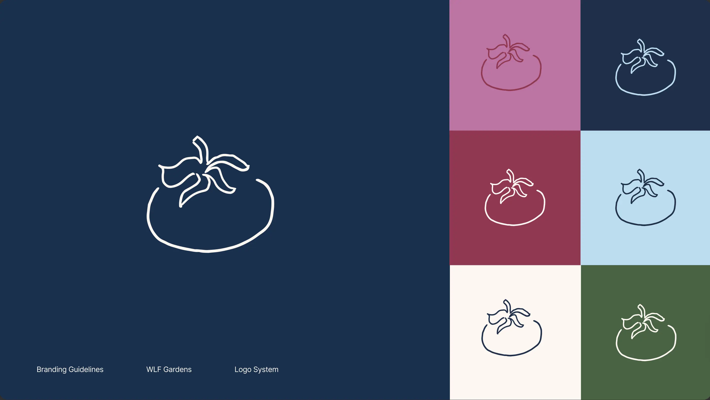
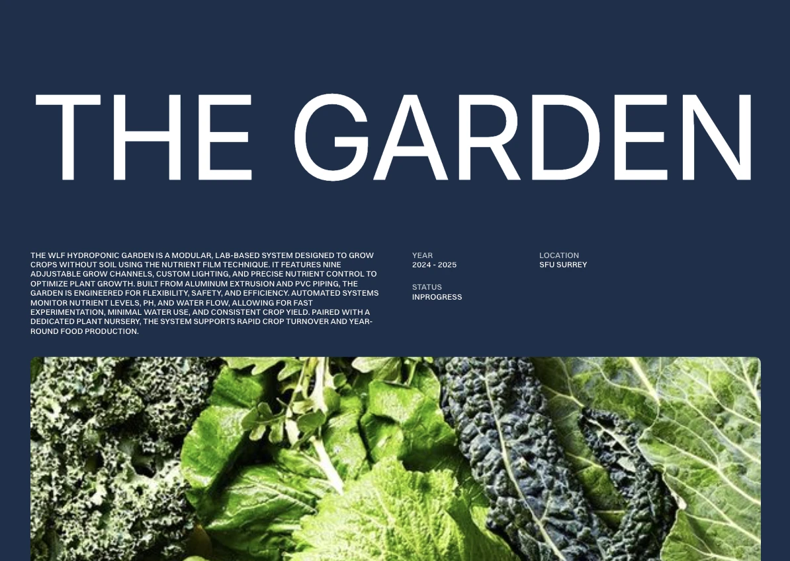

WLF Gardens Brand Identity & Website
Overview
For WLF Gardens, I created both a visual identity and a website to bring more clarity and cohesion to the project. The goal was to build a stronger public-facing presence so that community members, sponsors, and future collaborators could more easily understand what the initiative was, who was behind it, and why the work mattered.
At the same time, I wanted to create a more design-forward identity that would stand apart from typical student-led or club-based initiatives. Rather than defaulting to something expected, the aim was to build a visual language that felt intentional, contemporary, and reflective of the care behind the work itself.
Background
WLF Gardens is a collaborative sustainability initiative involving multiple people and areas of work. As the project grew, its communication started to feel fragmented. There was no clear visual system tying materials together, and there was not yet a central digital space that explained the project in a way that felt accessible and cohesive.
What stood out to me was that the work itself already had a strong sense of intention, but that was not fully coming through in how it was being presented. Many initiatives in this space tend to rely on familiar visual patterns, which can make them feel interchangeable. The challenge became not only to create clarity, but to build a distinct identity that reflected the uniqueness of the work.
Process
I approached the project as two connected parts of the same system: the identity and the website. Rather than treating them separately, I wanted the visual language and the digital experience to feel like they were growing from the same place.

A key part of the process was defining how WLF Gardens should feel. I wanted to move away from the visual language often associated with student or club projects and instead create something more design-forward and intentional. This meant focusing on typography, spacing, and colour in a way that felt contemporary, while still grounded in the values of sustainability and collaboration.
I started by developing a brand kit that could bring consistency across WLF’s communications. This included logo variations, a colour palette, font pairings, and a set of visual rules that could be used across social media, web, and other public-facing materials. I wanted the system to feel recognizable, but also flexible enough to work across different contexts without losing coherence.
From there, I used Framer to design and build a modular website that could act as a central hub for the project. I collaborated with different teams to gather content, better understand technical information, and make sure the final site reflected the work accurately. A large part of the process was translating that information into something more readable and approachable, without flattening the complexity of the project itself.
Throughout, I focused on usability, storytelling, and consistency. I wanted the site to feel easy to move through, while still carrying the same visual identity and sense of purpose established in the brand system.

Solution
The final solution was a unified communication system made up of a visual identity and a website that worked together. The brand kit provided a consistent and recognizable foundation, while the website created a dedicated space where people could learn about the initiative, understand team contributions, and engage with the project more easily.
The system balances clarity with a more elevated visual language, helping the project feel as considered as the work behind it. Together, these pieces turned a set of strong ideas into something more coherent, accessible, and outward-facing.
Results
The outcome was a clearer and more unified public presence for WLF Gardens. With a shared visual system and a central website in place, the project became easier to understand and easier to communicate across different teams and audiences.
The design-forward identity helped the project stand apart from similar initiatives, giving it a more distinct and recognizable presence. This made it easier for stakeholders and collaborators to engage with the work and understand its value.
More than anything, the project created alignment between the quality of the work itself and how that work was being presented.
Learnings
This project taught me a lot about building systems rather than isolated deliverables. It pushed me to think about how a visual identity can extend into a digital experience, and how both can work together to support clearer communication.
It also reinforced how important it is to think about differentiation, not just clarity. Creating something design-forward required being intentional about every decision, from typography to spacing, and understanding how those choices shape perception.
I also developed a stronger ability to translate complex, technical information into something more readable and engaging, without losing the depth of the content. This balance between accuracy and accessibility is something I continue to carry into my work.